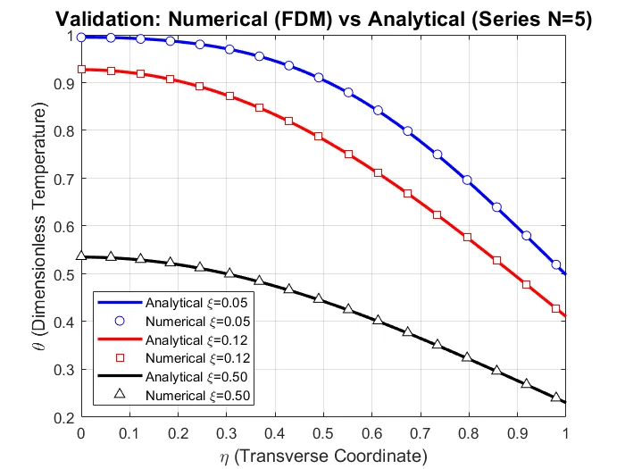

Heat Transfer & Applied Mathematics · Thermal / HVAC Track
Analytical and Numerical Study of Convective Heat Transfer in a Parallel-Plate Channel with Mixed Boundary Conditions
Advanced Mathematics · University of Tehran
View Full Report (PDF)Download PDF
Project Overview
The project develops analytical and numerical solutions for convective heat transfer between two parallel plates with a prescribed laminar velocity profile and a linearized convection–radiation wall condition.
Engineering tools and methods: MATLAB; implicit FDM, eigenfunction series, Sturm–Liouville theory.
Methodology
Modeling and formulation
Established a nondimensional advection–diffusion equation for the channel.
Numerical implementation
Applied separation of variables and Sturm–Liouville analysis to the linearized boundary-value problem.
Analysis and comparison
Constructed an implicit finite-difference solution in MATLAB.
Interpretation and reporting
Compared representative analytical and numerical temperature distributions.
Selected Findings and Scope
| Item | Reported result or scope |
|---|---|
| Model approaches | One analytical eigenfunction expansion and one implicit finite-difference model. |
| Biot number | Bi = 2 in the reported numerical cases. |
| Comparison | The reported plots show qualitative agreement; no explicit norm-based validation error is provided. |
| Boundary condition | Analytical formulation uses a linearized radiation contribution. |
The findings above reproduce values and limits stated in the submitted project report. They are reported numerical or design outputs unless explicitly noted otherwise; the full PDF should be consulted for model assumptions and details.
Figures from the Report


Complete Course Project Report
The full 25-page report includes the original technical formulation, calculations, figures, results and the references provided with the submitted course project.
Open Full Report (PDF)Download PDF
The public project copy has text-searchable student registration numbers removed where present; scientific content has not been rewritten.